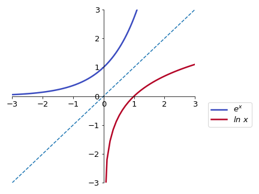

01 - Making mathematical statements#
Sets and relations#
Start by watching the video.
Polynomial functions#
One of the simplest elemntary functions is given by:
where \(n\) is a non-negative integer, and the coefficients \(a_n\), \(a_{n-1}\), …, \(a_0\). The highest value of \(n\) (for which the coefficient \(a_n\) is different from \(0\)) defines the degree of the polynomial.
Examples
\(f(x) = 3x^5 + 12x^4 - 6x^3 - x^2 + x - 16\) (Polynomial function of degree 5)
\(g(x) = \frac{3}{4}x^2 - \frac{5}{2} \) (Polynomial function of degree 2)
\(h(x) = 1.6x^8 - 0.576x^4 + 1.89x^2 - 0.7\) (Polynomial function of degree 8)
Tip
When the domain of the polynomial function is not explicitly given, it is frequently assumed to be all real numbers, \({\rm I\!R}\).
Tip
When no application is specified, the function name ‘\(f\)’ and variable name ‘\(x\)’ are usually chosen. For application purposes, the function and variable are often named for what they represent; for example, \(A(r)=\pi r^2\) for the area of a circle dependent on its radius.
Let us discuss three of the most common forms of polynomial functions with degrees \(0\), \(1\), and \(2\).
Degree 0#
Polynomial functions of degree 0 assume the form:
where \(c\) is a real number. This function is graphically represented by:

Example
For most mobile phone contracts nowadays a fixed fee is paid for the month with unlimited usage. So the cost as a function of used minutes would be a polynomial of degree zero, since the cost does not depend on the usage.
Degree 1#
Polynomial functions of degree 1 are also called linear functions and are given by:
where again \(m\) and \(b\) are real numbers (with \(m \ne 0\)).
The constants \(m\) and \(b\) are frequently referred to as slope and intercept. The intercept \(b\) shows where the function crosses the \(y\)-axis, while the slope \(m\) is related to the inclination of the function.
The sign of the slope \(m\) also determines if the function increases or decreases as a function of \(x\). We have:
One can also ask what is the value of \(x\) where the function \(f(x)\) crosses de \(x\)-axis, or, in mathematical notation, what is \(x\ \mbox{so that}\ f(x) = 0\). This value of x is called a root of \(f\) and it can be obtained by:
Example
Examples
The metabolic rate of some organisms depends (approximately) linearly on the body’s temperature, with higher rates at higher temperatures.
Degree 2#
Now we look at polynomial functions of degree 2, given by the general form:
the coefficients \(a\), \(b\), and \(c\) are real numbers (with \(a \ne 0\)). The graph of a polynomial function of degree 2 is a parabola and many of its properties can be readily known by analysing the coefficients.
Concavity#
Intercept & Roots#
The expression inside the square root distinguish between different properties of this function and therefore receives the name of discriminant:
Depending on the value of the discriminant a quick conclusion can be reached regarding the roots of the function.
Example
If we throw a ball that is heavy enough so that air resistance is negligible (alternatively we can travel to the moon) the height of the ball as a function of time follows a quadratic equation. Knowing the roots we can calculate when and where the ball will land.
Minimum/ maximum#
Depending on the concavity of the parabola (up or down), there will be a point where the function assumes a minimum or a maximum value. This point is called the vertex of the parabola. This extreme point can be easily determined by the symmetry properties of the function curve.
Example
Imagine the population of a specific region having a negative quadratic relationship - it undergoes initial growth, reaches its peak, and then declines. To determine both the maximum population size and the time when it peaked, we need to identify the extrema of this parabolic curve.
Now watch this video for a short introduction to complex numbers.
Rational functions#
Rational functions are defined as quotients of polynomial functions:
Example
Rational functions are often used to express ratios, for example of chemicals. Lets assume chemical A increases quadratically \(A(t) = 2 t^2\) and chemical B increases linearly \(B(t)=t+5\), the ratio will be:
Power functions#
Another type of function used in many applications are power functions (sometimes also called power laws). These functions have the functional form:
where \(C\) and \(\alpha\) are real constants (with \(C \ne 0\)).
Many commonly used functions are examples of power functions, e.g. the square root \(\sqrt{x}=x^{\frac 12}\) or the inverse function \(x^{-1}\).
Watch this video about additional properties of power law functions.
Exponential functions#
Similar to power functions, but with very different properties are the exponential functions:
where \(a\) is a positive constant. The parameter \(a\) is called base and the variable \(x\) is the exponent (remember that for power functions, the variable \(x\) is the base, raised to the power of the parameter \(\alpha\)).
Exponential functions are used to model many different real-world applications, from bacterial growth to radioactive decay.
Example
Suppose we start a bacterial colony with a single individual on a Petri dish. At each time step, counted as an average reproduction interval, each individual bacterium duplicates, originating two other individuals. The number of bacteria in the colony as a function of time, \(N(t)\), can be counted as:
\(t\) |
\(N(t)\) |
|---|---|
\(0\) |
\(1\ (= 2^0)\) |
\(1\) |
\(2\ (= 2^1)\) |
\(2\) |
\(4\ (= 2^2)\) |
\(3\) |
\(8\ (= 2^3)\) |
\(4\) |
\(16\ (= 2^4)\) |
\(5\) |
\(32\ (= 2^5)\) |
If no limitation (on space or resources) is imposed to the colony, the number of bacteria at each time step \(t\) can be well modelled by an exponential function of the form:
Exponential functions of the form \(f(x) = a^x\) (with \(a>0\)) can never assume negative values and their behaviour depends on the value of \(a\).

Tip
Note that the function increases with \(x\) if \(a>1\) (growth) and decreases with \(x\) if \(0<a<1\) (decay). To remember this, one can directly apply the properties of exponentiation. If \(f(x) = (1/3)^x\) (thus \(a = (1/3) < 1\)), we have:
and since \(3^x\) is an increasing function of \(x\), then \(1/3^x\) should be a decreasing function of \(x\) (as the denominator increases, the fraction decreases).
Example
In the early stages of a new desease, we can approximate the spread as exponential. In this case \(a\) is the number of people every infected person infects themselves. For \(a<1\) every person infects less than one other person on average and the desease will slow down, for \(a>1\) the desease will spread. At the beginning of the COVID-19 pandemic, an estimate for \(a\) (or in this case \(R\) for reproductive value) was \(a=4\). If we start with 1 infected person, how many do we have after 10 infection cycles?
Two of the most used bases are \(a=10\) and \(a=e\), where \(e=2.71828\) (called Euler’s number or Napier’s constant). Exponential functions with \(a=e\) are commonly written as:
The unique charachteristic of the exponential of base \(e\) is, that it is its own derivative
The both formulations can be changed into one another via
We have exponential growth when \(a>1\) and therefore when \(\lambda>0\) and decay when \(0<a<1\) and therefore \(\lambda<0\).
Logarithmic function#
Let us start this section by understanding what the expression
actually means. One possible way to read it is: “\(\mbox{log}_a b\) is the number with which I have to exponentiate the base \(a\) so that I find the number \(b\). Since “\(\mbox{log}_a b = x\), the above expression is equivalent to:
The expression \(\mbox{log}_a b\) is called the logarithm of b in the base a and it is also possible to define a logarithmic function given by:
where \(a\) is the base of the logarithm and it is assumed \(a>0\) and \(a \ne 1\).
By defining a function like this, for each \(x\) we will have a number \(y = f(x)\) for which \(a^y = x\). Therefore, the logarithmic function is only defined for \(x>0\). Like the exponential function, the behaviour of the logarithmic function for increasing \(x\) will depend on the value of the base \(a\).
Tip
The similarities between the graphs for exponential and logarithmic functions are not coincidental. In fact, the graph for a logarithmic function with base \(a\) can be obtained by drawing the graph for an exponential function with base \(a\) and reflecting it in relation to the line \(y = x\). [MAKE COMMENT ON INVERSE FUNCTIONS]
(here we use the common nomenclature \(\mbox{log}_e x = \mbox{ln}\ x\)).